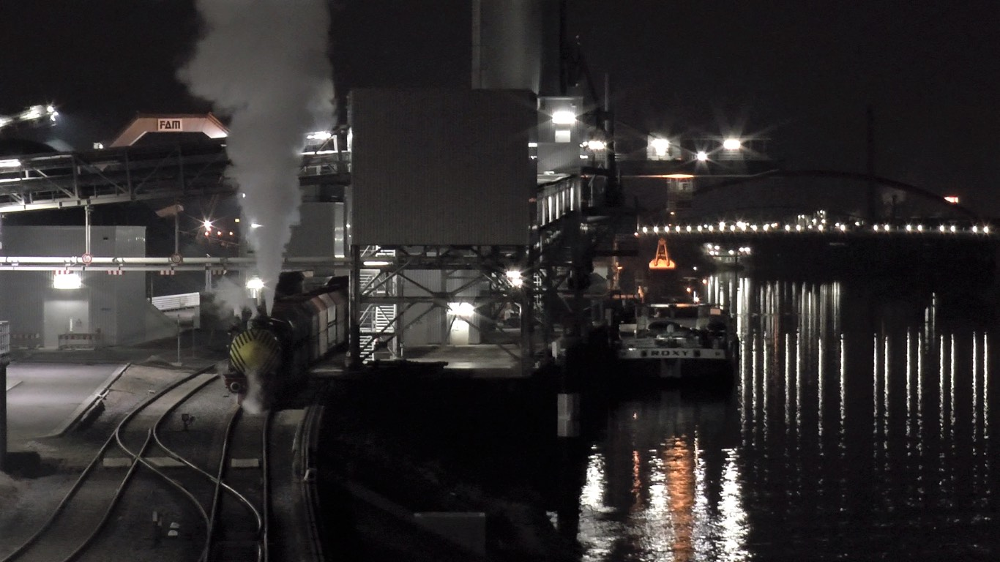
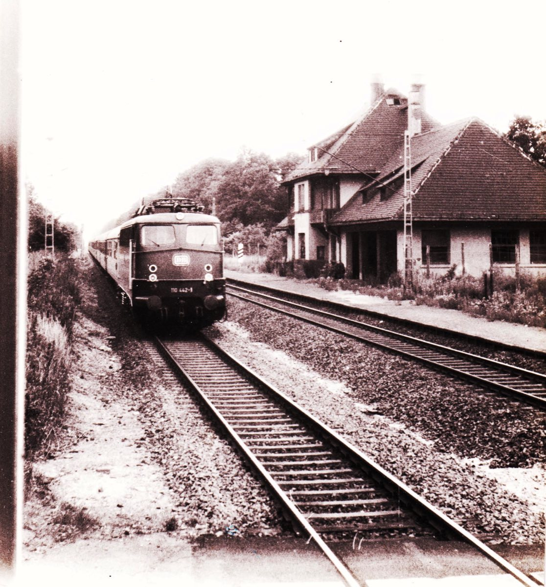
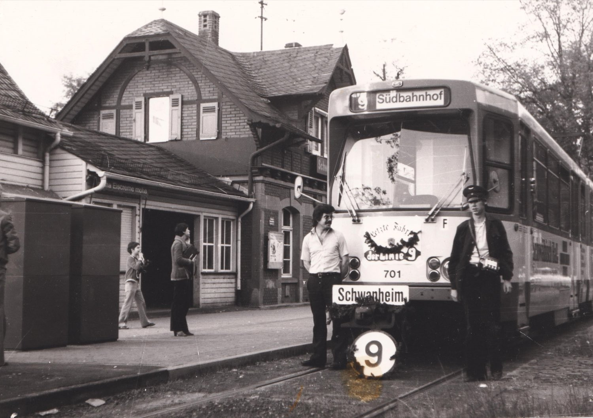
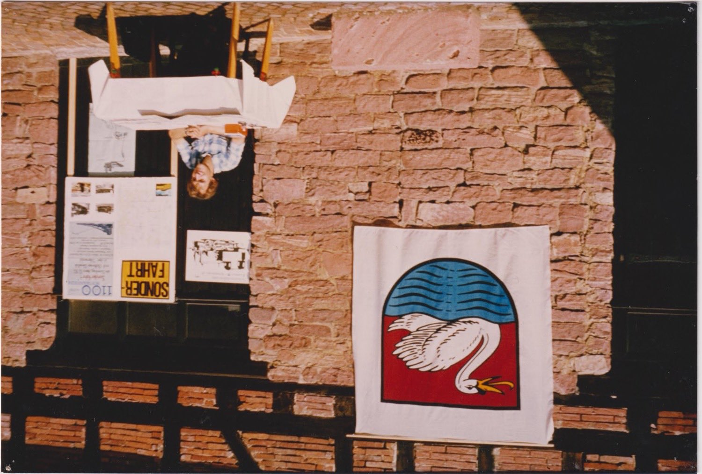
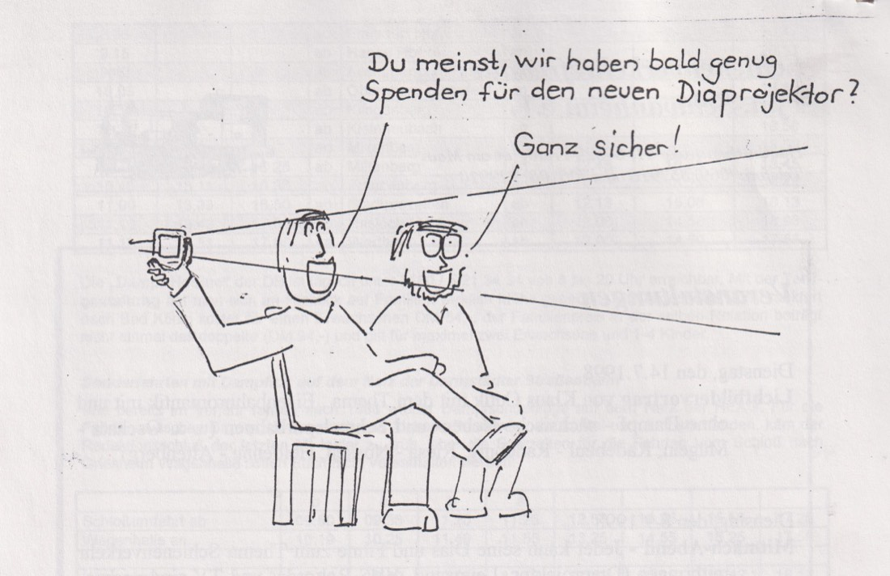
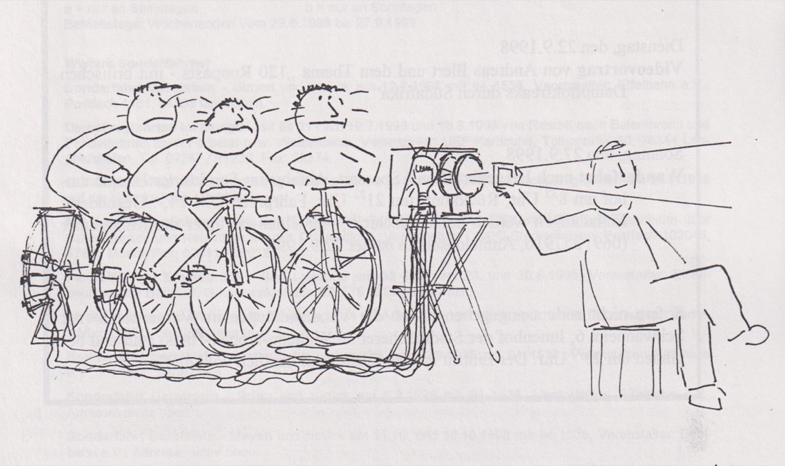
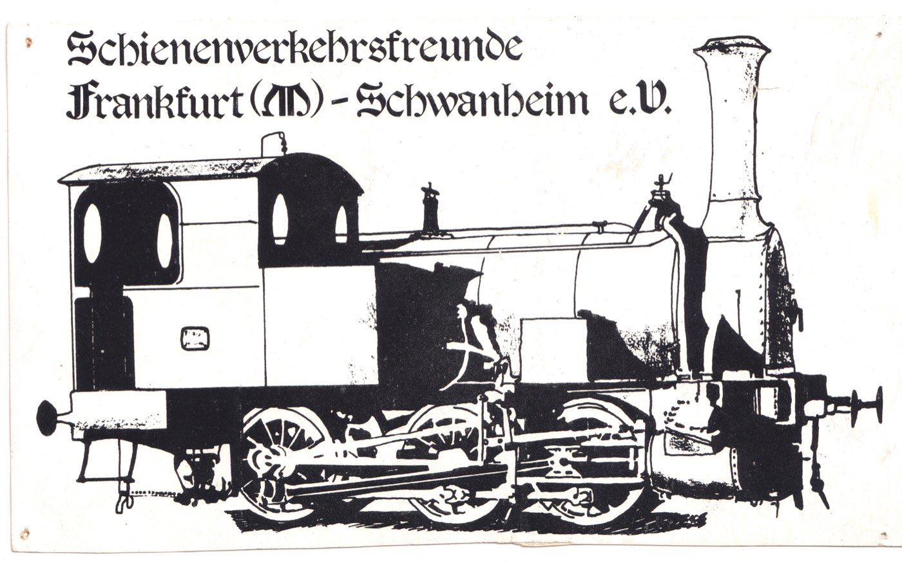
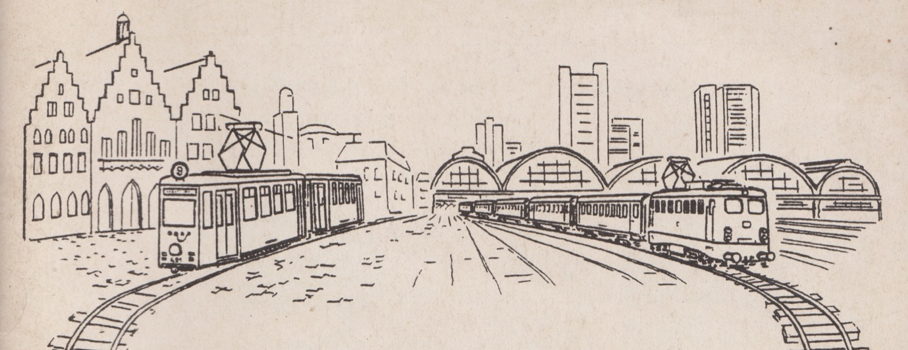

Gesammeltes
Aus dem Archiv
Bilder, Dokumente, Erinnerungsstücke – über fünfzig Jahre Vereinsleben hinterlassen einiges. Hier stehen ein paar Stücke daraus: Schwanheimer Bahngeschichte, Episoden aus dem Verein und Aufnahmen von unterwegs.

Ortsgeschichte
Zwei Bahnhöfe
Nur noch wenige Menschen kennen beide Schwanheimer Bahnhöfe. Die Bahnstraße verband den Ort mit der einsam im Wald gelegenen Bundesbahnstation. In den 1970er Jahren hielt dort schon kein Zug mehr, und das Gebäude wurde abgerissen. Die Endstation der Waldbahn und späteren städtischen Straßenbahn hat die Zeiten dagegen fast unverändert überdauert. Am 26. Mai 1978 verabschiedeten Mitglieder der Schienenverkehrsfreunde dort den letzten Zug der Linie 9. Heute endet an derselben Stelle die Linie 12 – und wer aussteigt, ist in keinen zehn Minuten zu Fuß bei unserem Vereinsraum in Alt Schwanheim.



Wo wir uns treffen
Der Vereinsraum
Unser Vereinsraum liegt im Hof des Kobelt-Hauses, zwischen dem Heimatmuseum und der Gaststätte „Seppche“. Das Bild zeigt den Eingang im Jahr 1980, geschmückt zur 1100-Jahr-Feier Schwanheims.
Zu diesem Anlass veranstalteten wir eine Eisenbahnausstellung. Ein Plakat warb für eine Sonderfahrt mit der letzten Diesellok V 36 in den Odenwald.


Vereinsgeschichte
Der Diaprojektor
Im Jahr 1998 ging der Diaprojektor des Vereins kaputt. Leere Kassen waren auch damals schon ein Thema. Also warb die Vereinszeitung – die „Mitglieder-Information“, kurz „MI“ – mit einem Cartoon bei den Mitgliedern um Spenden für ein Ersatzgerät.
Ein Diaprojektor gehört bis heute zur Grundausstattung unserer Vereinsabende, inzwischen ergänzt um Beamer und DVD-Player. Wer selbst etwas zeigen möchte, findet bei uns also alles vor.

Gedrucktes
Das Vereinszeichen
Die Dampflokomotive über jeder Seite dieser Website ist nicht neu erfunden – es ist dieselbe Zeichnung, die der Verein seit Langem führt. Auf der alten Vorlage steht der Name noch in Fraktur und ausgeschrieben: „Schienenverkehrsfreunde Frankfurt (M)-Schwanheim e. V.“ Heute verwenden wir die kürzere Form „Ffm.-Schwanheim“.
Für die Website liegt die Lok als Strichzeichnung vor. Dadurch bleibt sie in jeder Größe scharf – auf dem Handy ebenso wie im Ausdruck.
